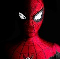

Bruce Wayne es el único personaje que se identifica como Batman y aparece en Batman, Detective Comics, Batman y
Robin, y Batman: The Dark Knight. Dick Grayson vuelve al manto de Nightwing
Harley Quinn
La creación de Harley Quinn fue una idea de último minuto propuesta por el escritor estadounidense Paul Dini para
modificar una escena del vigésimo-segundo episodio de Batman: la serie animada.

Spiderman
Entre sus habilidades destacan la fuerza, el combate y la inteligencia, producir y lanzar
telarañas sintéticas con ayuda de unos lanzadores que van sujetos a sus muñecas; trepar y percibir peligros a su alrededor.